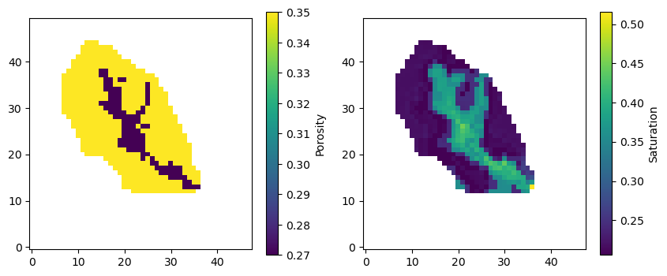
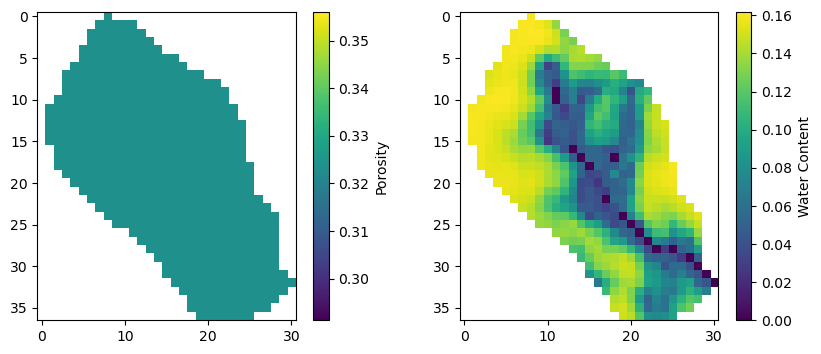

Note
Go to the end to download the full example code.
Ex. Loading and Processing Hydrological Model Outputs¶
This example demonstrates how to load and process outputs from different hydrological models using PyHydroGeophysX. We show examples for both ParFlow and MODFLOW models.
The example covers: - Loading ParFlow saturation and porosity data - Loading MODFLOW water content and porosity data - Basic visualization of the loaded data
This is typically the first step in any workflow where you want to convert hydrological model outputs to geophysical data.
import os
import sys
import numpy as np
import matplotlib.pyplot as plt
# For Jupyter notebooks, use the current working directory
try:
# For regular Python scripts
current_dir = os.path.dirname(os.path.abspath(__file__))
except NameError:
# For Jupyter notebooks
current_dir = os.getcwd()
# Add the parent directory (OPEN_ERT) to the path
parent_dir = os.path.dirname(os.path.dirname(current_dir))
if parent_dir not in sys.path:
sys.path.append(parent_dir)
from PyHydroGeophysX.model_output.parflow_output import ParflowSaturation, ParflowPorosity
from PyHydroGeophysX.model_output.modflow_output import MODFLOWWaterContent, MODFLOWPorosity
1. ParFlow Example¶
Let’s start by loading ParFlow data. ParFlow is a physically-based, three-dimensional model that simulates surface and subsurface flow.
Path to your Parflow model directory
current_dir = os.getcwd()
model_directory = os.path.join(current_dir, "data", "parflow", "test2")
# Load saturation data
saturation_processor = ParflowSaturation(
model_directory=model_directory,
run_name="test2"
)
# Use a safe timestep index (works even if only one file is available)
requested_idx = 200
available_count = len(getattr(saturation_processor, "available_timesteps", []))
timestep_idx = min(requested_idx, max(0, available_count - 1)) if available_count > 0 else 0
saturation = saturation_processor.load_timestep(timestep_idx) # Load first available timestep
# Load porosity data
porosity_processor = ParflowPorosity(
model_directory=model_directory,
run_name="test2"
)
porosity = porosity_processor.load_porosity()
mask = porosity_processor.load_mask()
mask.shape
porosity[mask==0] = np.nan
saturation[mask==0] = np.nan
print(saturation.shape)
Visualizing ParFlow Data¶
Now let’s create visualizations of the loaded ParFlow data. We’ll plot both porosity and saturation for layer 19 of the model.
Plotting the data
plt.figure(figsize=(10, 4))
plt.subplot(1, 2, 1)
plt.imshow(porosity[19, :, :], cmap='viridis')
plt.colorbar(label='Porosity')
plt.gca().invert_yaxis()
plt.title('ParFlow Porosity (Layer 19)')
plt.subplot(1, 2, 2)
plt.imshow(saturation[19, :, :], cmap='viridis')
plt.colorbar(label='Saturation')
plt.gca().invert_yaxis()
plt.title('ParFlow Saturation (Layer 19)')
plt.tight_layout()
plt.show()
The above plot shows the porosity and saturation data from ParFlow simulation. Notice how the values vary spatially across the domain. The porosity shows the void space available for fluid storage, while saturation indicates how much of that space is filled with water.
{kind=link}

2. MODFLOW Example¶
MODFLOW is a widely-used groundwater flow model. Here we’ll load water content and porosity data from a MODFLOW simulation.
These would be your actual data files
data_dir = model_directory = os.path.join(current_dir, "data")
modflow_dir = os.path.join(data_dir, "modflow")
idomain = np.loadtxt(os.path.join(modflow_dir, "id.txt"))
# Initialize MODFLOW water content processor
water_content_processor = MODFLOWWaterContent(
model_directory=modflow_dir, # Changed from sim_ws
idomain=idomain
)
# Load water content for a specific timestep
timestep = 1
water_content = water_content_processor.load_timestep(timestep)
print(water_content.shape)
# Path to your MODFLOW model directory
model_name = "TLnewtest2sfb2" # Your model name
# 1. Create an instance of the MODFLOWPorosity class
porosity_loader = MODFLOWPorosity(
model_directory=modflow_dir,
model_name=model_name
)
# 2. Load the porosity data
porosity_data = porosity_loader.load_porosity()
Visualizing MODFLOW Data¶
Let’s create visualizations of the MODFLOW simulation results. We’ll compare the porosity distribution with the water content.
Plotting the data
porosity_data1 = porosity_data[0, :, :]
porosity_data1[idomain==0] = np.nan
plt.figure(figsize=(10, 4))
plt.subplot(1, 2, 1)
plt.imshow(porosity_data1[ :, :], cmap='viridis')
plt.colorbar(label='Porosity')
plt.title('MODFLOW Porosity')
plt.subplot(1, 2, 2)
plt.imshow(water_content[0, :, :], cmap='viridis')
plt.colorbar(label='Water Content')
plt.title('MODFLOW Water Content')
plt.tight_layout()
plt.show()
The MODFLOW results show the comparison between porosity distribution and water content. The water content represents the volumetric water content, which is the product of porosity and saturation.
{kind=link}

Summary and Next Steps¶
This example has demonstrated the basic workflow for loading hydrological model outputs using PyHydroGeophysX. Key points:
ParFlow Integration: Load 3D saturation and porosity fields from ParFlow simulations
MODFLOW Integration: Access water content and porosity from MODFLOW models
Data Visualization: Create plots to understand spatial distribution of properties
Data Preprocessing: Handle inactive cells and missing data appropriately
The loaded hydrological data serves as input for geophysical forward modeling, where water content and porosity are converted to resistivity and seismic velocity using petrophysical relationships.
Next Steps:
Convert water content to resistivity using Archie’s law (see Example 2)
Set up 2D profiles for geophysical modeling (see Example 2)
Perform ERT forward modeling and inversion (see Examples 3-4)
Apply time-lapse analysis for monitoring applications (see Examples 4-7)
Download and Links¶
Download this exampleSee example_02 for the complete workflow
Visit the api_reference for detailed function documentation